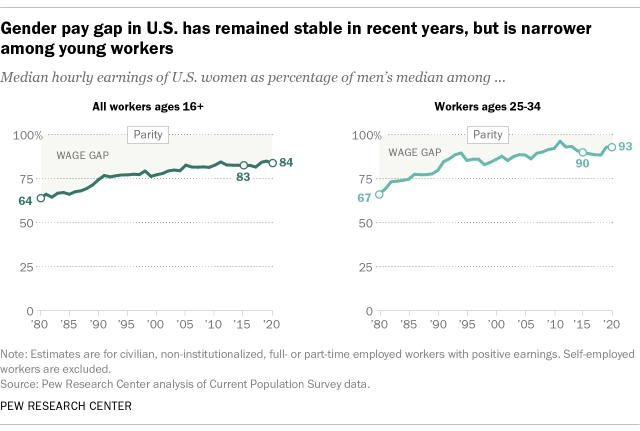

Gender Pay Gap in Corporate AmericaBY: DIVINE AKINJIYAN |
|
|
Women all around the world are paid less per hour, and usually enter very different occupations than men. |
|
|  |
Some companies value women less because of the amount of time they have to take off for paid maternity leave. If this was made available and normalized for both men and women, it would drastically reduce the wage gap that exists in some situations, I agree with Katherine Goldstein on this. In “Where are the Mothers”, Katherine suggests official work-from-home and flexible policies that prioritize work-life balance for everyone. I agree. If more people, birthing or not, were given those opportunities, it would not be strange when a woman asks for an extended, however long, paid maternity leave. Image Reference: Pew Research Center |
| The gender pay gap affects economic power, family dynamic, and access to education. | |
| Horizontal Segregation and it's role in the Gender Pay Gap: | |
| “Horizontal Segregation”: when men and women occupy different career roles disproportionately. This very much does exist and solidifies gender hierarchies and stereotypes. Women occupy less than 18% of all jobs in tech. | Read more: Washington Center for Equitable Growth |